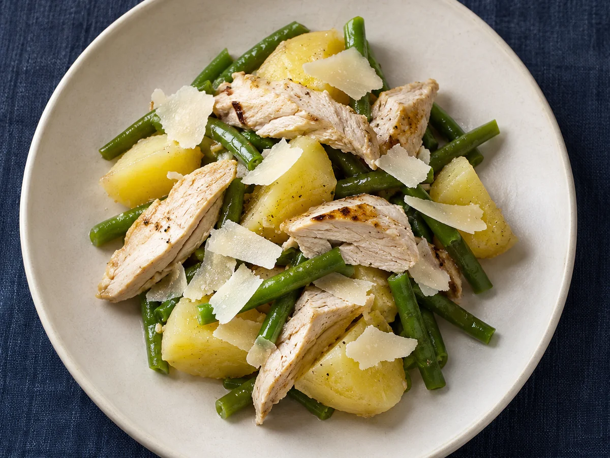

Orecchiette fresche con cime di rapa, acciughe e capperi
Orecchiette fresche con cime di rapa, acciughe e capperi.
0104
Valido solo a cena,
o a pranzo nei festivi
Orecchiette fresche con cime di rapa, acciughe e capperi.
0104

Patate e fagiolini tiepidi con pollo e scaglie di Grana.
07
Fino a esaurimento · Attendere la conferma del Ristorante per considerare valido l’ordine.
Le immagini dei piatti, pur realistiche, sono generate con intelligenza artificiale e hanno scopo illustrativo.
Prenotando tavolo e menù di cena, entro le 18, il coperto di 1,50 € è omaggio.
Attendere la conferma del Ristorante per considerare valido l’ordine.